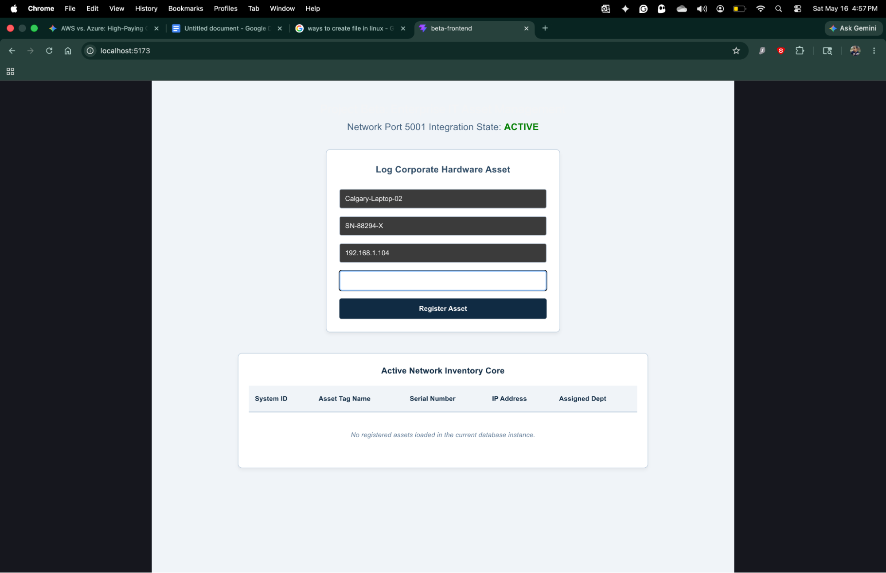
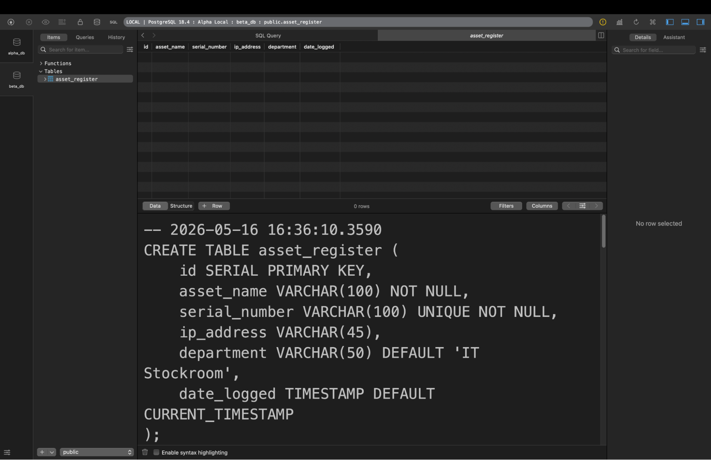
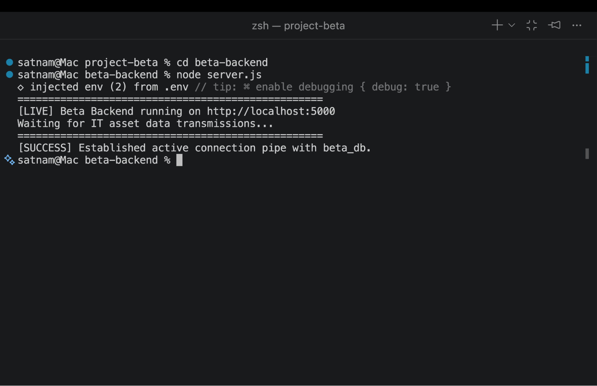
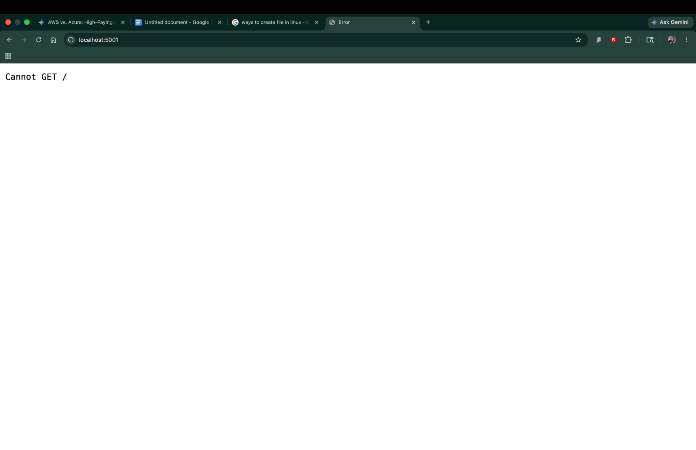
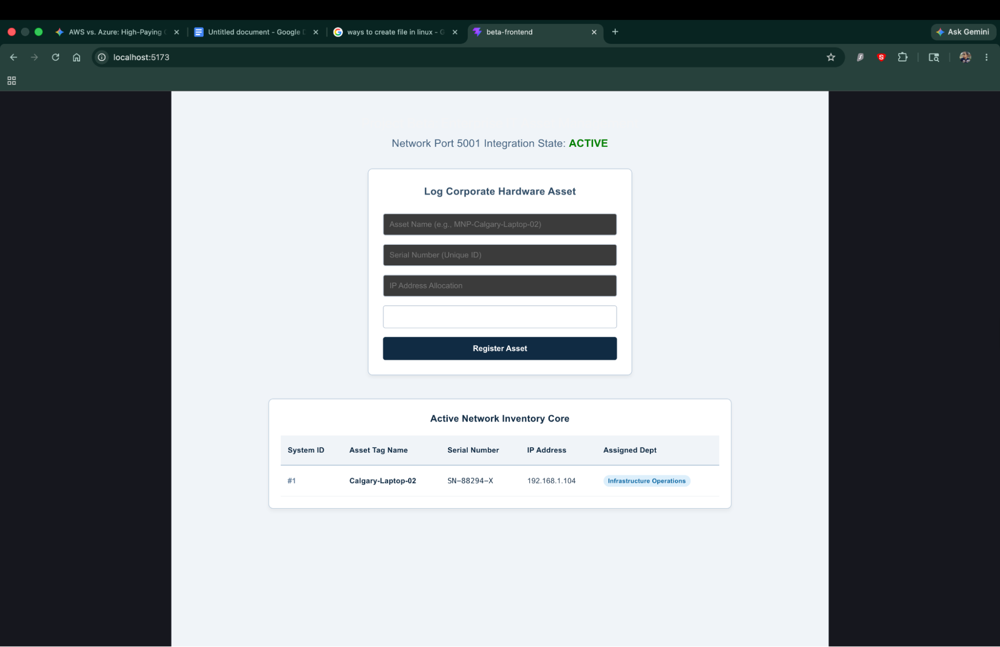
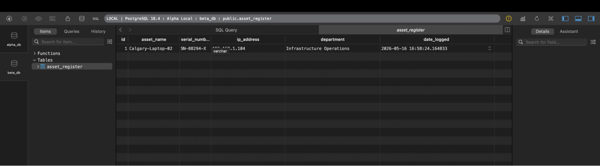

In enterprise-scale organizational networking, manual tracking of local assets leads to duplicate entry configurations and system oversight. Project Beta addresses this vulnerability by deploying a standalone three-tier administrative ecosystem capable of logging, tracking, and auditing internal hardware allocations over secure network interfaces.
Data boundaries are enforced natively inside the database cluster via strict field parameters. Unique indices prevent manufacturer serial overlapping during automated ingestion loops:
CREATE TABLE asset_register (
id SERIAL PRIMARY KEY,
asset_name VARCHAR(100) NOT NULL,
serial_number VARCHAR(100) UNIQUE NOT NULL,
ip_address VARCHAR(45),
department VARCHAR(50) DEFAULT 'IT Stockroom',
date_logged TIMESTAMP DEFAULT CURRENT_TIMESTAMP
);

During localized pipeline verification, background resource overlapping was observed on default socket boundaries. System logs revealed native macOS background streaming elements were locking down Port 5000, triggering connectivity errors.
To establish clean transmission lanes, application hooks were abstracted into isolated environmental maps (.env) and the live API loopback channel was successfully migrated to operate securely on **TCP Port 5001**.


The client ecosystem uses state arrays to process variables seamlessly. When an administrator commits an entry via the console, the payload targets the API via a secure asynchronous POST string. Once written to the database, a background GET retrieval updates the active data registry table view without requiring window reloads.

